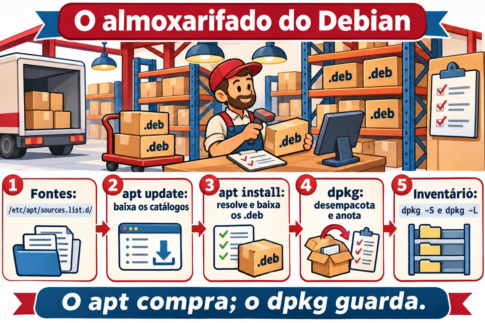
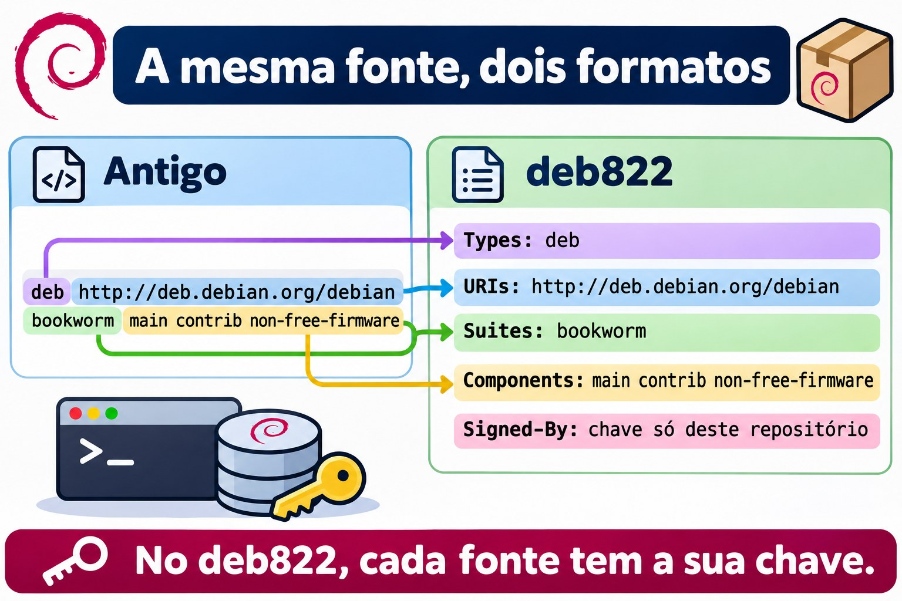
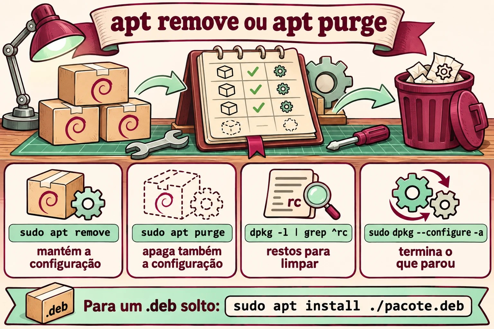

Aula 6.1 · Pacotes no Debian
Até aqui você instalou programas com um apt install aqui e outro ali, sem pensar muito. Hoje você olha por dentro. O que é um pacote, quem o desempacota, quem busca na internet e resolve as dependências, o que sobra no disco quando você remove, e como descobrir de que pacote veio um arquivo qualquer. Você também lê as fontes de onde o apt baixa tudo, no formato novo, o deb822. Esta é a primeira de cinco aulas sobre software. A próxima faz o mesmo na Rocky, e você vai ver que a ideia é a mesma, só com outros nomes.
Núcleo desta aula:
apt update,apt install,apt remove,apt purgeeapt autoremove;apt searcheapt show;dpkg -l,dpkg -L pacoteedpkg -S arquivo; a diferença entredpkg(instala o arquivo.deb) eapt(busca, resolve dependências e chama odpkg); e onde ficam as fontes:/etc/apt/sources.list.d/. O resto é aprofundamento.
| Ficha | Aula 6.1 |
|---|---|
| Módulo | M6 · Software, aula 1 de 5 |
| Quando | Semana 10 |
| Ao final você consegue | Explicar o que há dentro de um .deb e quem faz o quê entre dpkg e apt; atualizar os índices, procurar, ver detalhes, instalar, remover e purgar; ler o estado de um pacote no dpkg -l (ii, rc, iU); listar os arquivos de um pacote e achar o pacote de um arquivo, instalado ou não; entender pacotes manuais e automáticos e o autoremove; ler e escrever uma fonte no formato deb822; instalar um .deb solto e consertar as dependências que faltarem |
| Pré-requisitos | Aula 3.3 (grep); Aula 4.2 (systemd); internet na debian-lab |
| Tempo | Cerca de 2h30 |
| Snapshots | m6a1-inicio e m6a1-fim na debian-lab. A rocky-lab descansa hoje |
1 · Aquecimento
Três perguntas, de cabeça. Escreva as respostas; o Gabarito confere no fim.
- Você roda
apt removenum pacote. Palpite: o arquivo de configuração dele, em/etc, vai embora junto? - Alguém te manda um arquivo
programa.deb, e você rodasudo dpkg -i programa.deb. Palpite: se faltar uma biblioteca, odpkgvai baixá-la? - Você acha um arquivo estranho em
/usr/bin. Palpite: dá para saber de que pacote ele veio, com um comando só?
2 · Por que importa
| O chamado | A resposta errada | O que ela causa |
|---|---|---|
| "Remove o Apache e instala o Nginx" | apt remove apache2 e pronto | A configuração antiga fica em /etc/apache2, e as dependências que vieram com ele continuam instaladas. Meses depois, ninguém sabe se aquilo é lixo ou se alguma coisa usa |
"O apt diz unmet dependencies e não instala mais nada" | Apagar arquivos em /var/lib/dpkg ou forçar com --force-all | O banco de pacotes fica inconsistente, e a próxima atualização pode quebrar o sistema. Quase sempre, apt --fix-broken install resolve |
"Esse arquivo em /usr/local/bin é de quê?" | Apagar para ver o que acontece | O dpkg -S diz na hora se algum pacote é dono do arquivo. Se nenhum for, alguém instalou à mão, e isso já é uma informação |
| "Adiciona esse repositório do Ubuntu que eu achei num blog" | Colar a linha no sources.list | Pacotes de outra distro, ou de outra versão, misturados com os seus. Funciona até a próxima atualização, e aí as dependências brigam |
3 · Modelo mental
Pense num almoxarifado. Um pacote
.debé uma caixa lacrada: dentro há os arquivos, uma etiqueta com nome, versão e dependências ("para funcionar, precisa da caixa X"), e instruções para antes e depois de abrir (os scripts). Odpkgé o almoxarife: recebe uma caixa, guarda cada coisa no lugar, anota tudo no inventário (/var/lib/dpkg/) e sabe dizer de que caixa veio cada objeto. Ele não sai para comprar nada: se a caixa pede outra que não está no estoque, ele reclama e para. Oapté o comprador: lê os catálogos dos fornecedores (os repositórios listados nas fontes), descobre todas as caixas necessárias, baixa e entrega ao almoxarife na ordem certa. Oapt updatesó atualiza os catálogos: não compra nada.
/etc/apt/sources.list.d/*.sources (os fornecedores)
│
│ apt update: baixa os catálogos
▼
/var/lib/apt/lists/ (os catálogos: quem tem o quê, em que versão)
│
│ apt install X: resolve dependências e baixa
▼
/var/cache/apt/archives/*.deb (as caixas baixadas)
│
│ o apt chama o dpkg
▼
dpkg: desempacota, roda os scripts e anota em /var/lib/dpkg/status

4 · O essencial
apt, o dia a dia
| Comando | Faz |
|---|---|
sudo apt update | Baixa os catálogos novos. Rode antes de instalar ou atualizar |
apt search palavra / apt show pacote | Procura nos catálogos / mostra versão, tamanho, dependências e descrição |
sudo apt install pacote | Instala com as dependências |
sudo apt install ./arquivo.deb | Instala um .deb solto e busca as dependências. O ./ é obrigatório |
sudo apt remove pacote | Remove os arquivos, mas mantém a configuração em /etc |
sudo apt purge pacote | Remove tudo, inclusive a configuração |
sudo apt autoremove | Remove as dependências que ninguém mais usa |
sudo apt upgrade | Atualiza o que der sem remover nada |
sudo apt full-upgrade | Atualiza tudo, removendo pacotes se for preciso |
apt list --installed / --upgradable | Lista instalados / com atualização pendente |
apt policy pacote | Versão instalada, versão candidata e de que repositório cada uma vem |
O apt foi feito para pessoas, e a saída dele pode mudar entre versões. Em script, use apt-get e apt-cache, que têm a saída estável. Por isso o apt avisa WARNING: apt does not have a stable CLI interface quando a saída vai para um pipe. Saiba os dois.
dpkg, o inventário
| Comando | Faz |
|---|---|
dpkg -l / dpkg -l 'padrão*' | Lista os pacotes e o estado de cada um |
dpkg -L pacote | Arquivos que um pacote instalado colocou no disco |
dpkg -S /caminho/arquivo | Que pacote instalado é dono do arquivo |
dpkg -s pacote | Estado e detalhes de um pacote instalado |
dpkg -I arquivo.deb / dpkg -c arquivo.deb | Etiqueta / conteúdo de um .deb que ainda não foi instalado |
sudo dpkg -i arquivo.deb | Instala o .deb, mas não busca dependências |
sudo dpkg -r pacote / sudo dpkg -P pacote | Remove / purga |
sudo dpkg --configure -a | Termina instalações interrompidas |
sudo dpkg-reconfigure pacote | Refaz as perguntas de configuração do pacote |
As duas primeiras letras do dpkg -l são o estado. A primeira é o que se pediu, e a segunda é o que está:
| Código | Quer dizer |
|---|---|
ii | Pediu para instalar, está instalado. O normal |
rc | Foi removido, mas a configuração ficou. Some com purge |
iU | Desempacotado, mas não configurado: falta dependência ou a instalação foi interrompida |
hi | Instalado e travado (hold): não é atualizado |
Configuração e purge
Os arquivos de configuração que o pacote declara (os conffiles, quase sempre em /etc) têm tratamento especial. Num remove, ficam no disco, para você não perder o que ajustou. Numa atualização, se você tiver mudado o arquivo e o pacote também, o dpkg pergunta o que fazer. Você pode manter o seu, aceitar o novo ou ver a diferença. A lista de conffiles de um pacote sai com dpkg-query -W -f='${Conffiles}\n' pacote.
Manual e automático
O apt lembra por que cada pacote está instalado. Se você pediu, ele é manual. Se veio como dependência, é automático. Quando nenhum pacote manual precisa mais de um automático, o apt autoremove o leva embora.
| Comando | Faz |
|---|---|
apt-mark showmanual / showauto | Lista os manuais / os automáticos |
sudo apt-mark manual pacote | Marca como manual: o autoremove não leva mais |
sudo apt-mark hold pacote / unhold | Trava / destrava a versão |
apt-cache depends pacote / rdepends pacote | Do que ele depende / quem depende dele |
Achar o pacote de um arquivo
O dpkg -S só conhece os pacotes instalados. Para procurar em todos os pacotes do repositório, use o apt-file, que tem um catálogo próprio: sudo apt install apt-file, sudo apt-file update e apt-file search bin/dig.
As fontes, no formato deb822
As fontes dizem ao apt de onde baixar. Há dois formatos, e você vai encontrar os dois:
# Formato antigo, uma linha por fonte (/etc/apt/sources.list)
deb http://deb.debian.org/debian bookworm main contrib non-free-firmware
# Formato deb822 (/etc/apt/sources.list.d/debian.sources)
Types: deb
URIs: http://deb.debian.org/debian
Suites: bookworm bookworm-updates
Components: main contrib non-free-firmware
Signed-By: /usr/share/keyrings/debian-archive-keyring.gpg| Campo | O que é |
|---|---|
Types | deb para pacotes prontos; deb-src para o código-fonte |
URIs | O endereço do espelho |
Suites | A versão pelo codinome: bookworm é a Debian 12 e trixie é a 13. Mais as atualizações, como bookworm-updates e bookworm-security |
Components | main (livre), contrib, non-free e non-free-firmware |
Signed-By | A chave GPG que assina esse repositório, e só ele |
Cada fonte num arquivo .sources em /etc/apt/sources.list.d/, com a chave própria no Signed-By, é o jeito moderno. O antigo apt-key está obsoleto, porque confiava em qualquer chave para qualquer repositório. O formato depende da versão e de como a máquina foi instalada. Uma Debian 12 costuma vir com o sources.list de uma linha. Na Debian 13, o apt modernize-sources converte para deb822.


Rocky × Debian
A próxima aula é a Rocky, mas vale ver o mapa agora:
| Tarefa | Debian | Rocky |
|---|---|---|
| Almoxarife (arquivo local) | dpkg | rpm |
| Comprador (repositório e dependências) | apt | dnf |
| Arquivos de um pacote | dpkg -L | rpm -ql |
| Dono de um arquivo | dpkg -S | rpm -qf |
| Pacote de um arquivo não instalado | apt-file search | dnf provides |
| Remover a configuração também | purge | Não existe; o rpm guarda cópias .rpmsave |
| Fontes | /etc/apt/sources.list.d/*.sources | /etc/yum.repos.d/*.repo |
5 · Lab guiado
Tudo na debian-lab (202). A rocky-lab descansa hoje. Você vai precisar de internet na VM.
Passo 0 · Snapshot e pasta. No Proxmox:
qm snapshot 202 m6a1-inicioNa VM:
mkdir -p ~/lab61 && cd ~/lab61Passo 1 · De onde vêm os pacotes.
ls -l /etc/apt/sources.list /etc/apt/sources.list.d/
cat /etc/apt/sources.list.d/*.sourcesResultado esperado: no Debian 13 você vê um debian.sources no formato deb822 (Types / URIs / Suites / Components / Signed-By). O sources.list pode nem existir, ou estar vazio. Anote quais Suites aparecem (por exemplo trixie, trixie-updates, trixie-security).
Passo 2 · Atualizar o catálogo.
sudo apt update
ls /var/lib/apt/lists/ | head
apt list --upgradableO apt update não instala nada. Ele só baixa os catálogos para /var/lib/apt/lists/. Quem atualiza pacotes é o apt upgrade; hoje não rode esse.
Passo 3 · Procurar antes de instalar.
apt search --names-only '^tree$'
apt show tree
apt policy treeO apt policy mostra a versão instalada, a candidata e de qual repositório ela viria. É o comando que responde "por que ele quer instalar essa versão?".
Passo 4 · Instalar e investigar.
sudo apt install -y tree
dpkg -l tree
dpkg -L tree
dpkg -S $(command -v tree)
dpkg -s tree | grep -E '^(Status|Version)'Resultado esperado: ii no dpkg -l, a lista de arquivos no -L, e tree: /usr/bin/tree no -S.
Passo 5 · Um pacote com configuração: nginx.
sudo apt install -y nginx
dpkg -S /etc/nginx/nginx.conf
dpkg -l 'nginx*'
systemctl is-active nginxRepare: o nginx.conf pertence ao nginx-common, não ao nginx. Pacotes grandes costumam se dividir assim (binário de um lado, configuração e arquivos comuns do outro).
Passo 6 · remove × purge, ao vivo.
sudo apt remove -y nginx nginx-common
dpkg -l 'nginx*' | grep -E '^(ii|rc)'
ls /etc/nginx/Resultado esperado: o nginx-common aparece como rc (removido, configuração ficou), e /etc/nginx/ continua lá. Agora:
sudo apt purge -y nginx-common
ls /etc/nginx/ 2>&1
sudo apt autoremove -yDepois do purge, o /etc/nginx/ some e o rc desaparece da lista. O autoremove leva as dependências que só estavam lá por causa do nginx, se houver alguma.
Passo 7 · Um .deb na mão, sem dependência.
apt download nginx
ls -l *.deb
dpkg -I nginx_*.deb | grep -E '^ (Package|Version|Depends)'
dpkg -c nginx_*.deb | head
sudo dpkg -i nginx_*.debResultado esperado: o dpkg -i reclama que falta o nginx-common (você deu purge nele no passo 6). O pacote fica meio instalado:
dpkg -l nginx | tail -1
sudo apt install -y treeO dpkg -l mostra iU (unpacked, não configurado). E o apt passa a se recusar a fazer qualquer outra coisa e manda rodar --fix-broken. É isso que você faz:
sudo apt --fix-broken install -y
dpkg -l nginx nginx-common | tail -2Agora os dois estão ii. Moral: um .deb solto se instala com sudo apt install ./arquivo.deb (com o ./), que já resolve as dependências. O dpkg -i não busca nada.
Passo 8 · Manual, automático e hold.
apt-mark showmanual | grep -E '^(tree|nginx)'
apt-mark showauto | grep nginx
sudo apt-mark hold nginx
apt-mark showhold
sudo apt-mark unhold nginxO nginx-common aparece como auto: entrou como dependência. Se um dia o nginx sair, o autoremove leva o nginx-common junto.
Passo 9 · O histórico.
grep -E ' (install|remove|purge) ' /var/log/dpkg.log | tail
tail -n 30 /var/log/apt/history.logO history.log diz quem pediu o quê (a linha Commandline: e o Requested-By:). O dpkg.log diz o que de fato mudou, pacote por pacote. Em um chamado "quem mexeu nesse servidor ontem?", você começa por aqui.
Passo 10 · (opcional) apt-file.
sudo apt install -y apt-file && sudo apt-file update
apt-file search bin/digO dpkg -S só procura o que já está instalado. O apt-file procura em todo o repositório: "qual pacote me dá o comando dig?" (resposta: bind9-dnsutils).
Limpeza:
sudo apt purge -y nginx nginx-common tree
sudo apt autoremove -y
cd ~ && rm -r ~/lab61Decida 1 · O nginx.conf está todo errado
Alguém editou o /etc/nginx/nginx.conf até não sobrar nada aproveitável. Você quer o arquivo original do pacote de volta. Marque uma opção antes.
- A)
sudo apt remove nginx nginx-common && sudo apt install nginx - B)
sudo apt purge nginx nginx-common && sudo apt install nginx - C)
sudo apt install --reinstall nginx-common
| Se você marcou | Resultado | Por quê |
|---|---|---|
| A | O arquivo quebrado continua lá | O remove deixa os conffiles. Na reinstalação, o dpkg vê que o arquivo foi modificado por você e não sobrescreve |
| B | Arquivo original de volta | O purge apaga os conffiles. A instalação nova encontra o lugar vazio e coloca o original |
| C | O arquivo quebrado continua lá | O dpkg respeita conffile modificado, mesmo em reinstalação |
Para fixar: o dpkg protege sua configuração de propósito. Para ter o original de volta, ou você dá purge, ou apaga o arquivo e reinstala forçando (veja a seção 6). Antes de qualquer um dos dois, faça uma cópia: sudo cp -a /etc/nginx /root/nginx.bak.
Decida 2 · O fornecedor mandou um .deb
Você recebeu agente_2.1_amd64.deb. O sudo dpkg -i falhou com dependency problems. Marque uma opção antes.
- A)
sudo dpkg -i --force-depends agente_2.1_amd64.deb - B)
sudo apt --fix-broken install - C) Editar
/var/lib/dpkg/statuse tirar a linhaDepends:do pacote
| Se você marcou | Resultado | Por quê |
|---|---|---|
| A | Instala, mas quebrado | O pacote fica sem a biblioteca de que precisa. Ele falha depois, longe de você, e o apt continua reclamando |
| B | Dependências instaladas, pacote configurado | O apt busca o que falta no repositório e termina a configuração que o dpkg deixou pela metade |
| C | Banco do dpkg corrompido | Esse arquivo é o banco de dados do sistema. Editar na mão é o caminho mais curto para um servidor que ninguém consegue atualizar |
Para fixar: da próxima vez, sudo apt install ./agente_2.1_amd64.deb desde o começo. Se a dependência não existir em nenhum repositório seu, o problema é do fornecedor, não do seu servidor.
6 · Quebre e conserte
Quebra 1 · "Could not get lock". Abra duas sessões SSH na debian-lab.


Na sessão 1:
sudo apt install nginxPare no Do you want to continue? [Y/n]. Não responda. Na sessão 2:
sudo apt install treeSintoma: Could not get lock /var/lib/dpkg/lock-frontend. It is held by process NNNN (apt).
Diagnóstico: o próprio erro diz o PID. Confira quem é:
ps -fp NNNNConserto: volte à sessão 1 e responda n (ou termine a instalação). A sessão 2 passa a funcionar.
Na vida real: quase sempre é o unattended-upgrades rodando, ou outro admin. Nunca apague o arquivo de lock: você deixa dois processos mexendo no mesmo banco. Espere, ou descubra o processo e fale com quem o rodou.
Quebra 2 · Conffile apagado. Instale o nginx e apague o arquivo principal:
sudo apt install -y nginx
sudo rm /etc/nginx/nginx.conf
sudo nginx -tSintoma: o nginx -t falha, porque não acha a configuração.
Tente o conserto óbvio:
sudo apt install --reinstall -y nginx-common
ls -l /etc/nginx/nginx.confO arquivo não volta. O dpkg entende que você apagou de propósito e respeita isso.
Conserto:
sudo apt install --reinstall -y -o Dpkg::Options::=--force-confmiss nginx-common
sudo nginx -tAgora o arquivo volta e o teste passa. O --force-confmiss diz "conffile que sumiu, coloque de volta".
Quebra 3 · "dpkg was interrupted". Esta você não precisa provocar, mas vai ver na vida real: uma queda de luz ou um SSH que caiu no meio de um apt upgrade. O apt para tudo com:
E: dpkg was interrupted, you must manually run 'sudo dpkg --configure -a' to correct the problem.
Conserto, nesta ordem:
sudo dpkg --configure -a
sudo apt --fix-broken install
sudo apt update && sudo apt upgradePor isso, atualização longa em servidor se roda dentro de tmux (Aula 3.x): se o SSH cair, o processo continua.
Limpeza: sudo apt purge -y nginx nginx-common && sudo apt autoremove -y
7 · Armadilhas
| Armadilha | O que acontece | Como evitar |
|---|---|---|
apt remove achando que limpou tudo | A configuração velha volta na próxima instalação e você não entende o comportamento | Para recomeçar do zero, purge. Para achar restos: dpkg -l | grep ^rc |
dpkg -i em .deb com dependências | Pacote iU e o apt bloqueado | apt install ./arquivo.deb |
apt em script ou cron | Aviso de "interface instável" e saída que muda entre versões | apt-get e apt-cache em scripts |
apt upgrade sem apt update antes | Nada atualiza: o catálogo é o de ontem | Sempre update primeiro |
autoremove no automático | Remove um pacote que você usava, mas que tinha entrado como dependência | Olhe a lista antes do y. O que você usa de verdade, apt-mark manual |
| Repositório de Ubuntu ou de outra versão no Debian | Mistura de bibliotecas, dependências impossíveis (o famoso FrankenDebian) | Só repositórios da sua versão. Terceiros só com Signed-By e de fonte oficial |
Apagar /var/lib/dpkg/lock* | Dois processos escrevendo no banco ao mesmo tempo | Descobrir quem segura o lock e esperar |
apt-key add copiado de um tutorial antigo | Comando obsoleto; a chave passa a valer para todos os repositórios | Chave em /etc/apt/keyrings/ e Signed-By: no .sources |
hold esquecido | Aquele pacote fica anos sem correção de segurança | apt-mark showhold no seu checklist mensal |
8 · Quiz
Responda sem olhar. O gabarito está no fim da aula.
- No
dpkg -l, qual a diferença entre um pacoteiie umrc? Qual comando some com orc? - Você encontrou
/usr/sbin/nginxno servidor. Qual comando diz de que pacote ele veio? E se o arquivo não estiver instalado, como você descobre que pacote o fornece? - Qual a diferença prática entre
sudo dpkg -i agente.debesudo apt install ./agente.deb? - Você vai escrever um script que roda no cron e instala pacotes. Por que não usar
aptnele, e o que usar no lugar? - O
apt autoremovequer remover ocurl, que seus scripts usam. Por que isso acontece, e qual comando impede? - Which command lists the files installed by an already-installed Debian package? a)
dpkg -cb)dpkg -Lc)dpkg -Sd)apt-cache show
9 · Cola
Para saber de cor:
| Quero... | Comando |
|---|---|
| Atualizar o catálogo | sudo apt update |
| Instalar / remover / remover com config | sudo apt install X / remove X / purge X |
| Limpar dependências órfãs | sudo apt autoremove |
| Procurar e ler sobre um pacote | apt search X / apt show X |
| Instalar um .deb solto | sudo apt install ./arquivo.deb |
| Consertar instalação pela metade | sudo dpkg --configure -a e sudo apt --fix-broken install |
| Está instalado? | dpkg -l X |
| Quais arquivos o pacote instalou | dpkg -L X |
| De que pacote é este arquivo | dpkg -S /caminho |
Para consultar:
| Quero... | Comando |
|---|---|
| De onde viria a versão | apt policy X |
| O que tem dentro de um .deb | dpkg -I arquivo.deb / dpkg -c arquivo.deb |
| Pacote que fornece um arquivo não instalado | apt-file search caminho |
| Congelar a versão | sudo apt-mark hold X / unhold X / apt-mark showhold |
| Manual × automático | apt-mark showmanual / sudo apt-mark manual X |
| Restos de configuração | dpkg -l | grep ^rc |
| Reinstalar recolocando conffile apagado | sudo apt install --reinstall -o Dpkg::Options::=--force-confmiss X |
| Reconfigurar pelas perguntas do pacote | sudo dpkg-reconfigure X |
| Histórico | /var/log/apt/history.log e /var/log/dpkg.log |
| Fontes | /etc/apt/sources.list.d/*.sources (deb822) |
| Chaves de repositório | /etc/apt/keyrings/ + Signed-By: |
Flashcards:
apté o comprador,dpkgé o almoxarife → quem resolve dependências? O apt.remove×purge→ purge também apaga os conffiles em /etc.iUno dpkg -l → desempacotado, não configurado: rodeapt --fix-broken install.-L×-S×-c→ -L: arquivos de um pacote instalado; -S: dono de um arquivo; -c: conteúdo de um .deb.- "Could not get lock" → outro apt rodando; descubra quem, nunca apague o lock.
10 · Checklist e fechamento
- [ ] Sei onde ficam as fontes e leio um
.sourcesdeb822 - [ ] Instalo, removo e dou purge, e sei o que sobra em cada caso
- [ ] Descubro o dono de um arquivo e os arquivos de um pacote
- [ ] Instalo um .deb solto sem quebrar dependências
- [ ] Conserto um
iUe um "dpkg was interrupted" - [ ] Sei por que
aptnão vai em script - [ ] Acho no log quem instalou o quê
Último exercício, sem olhar a aula: na debian-lab, instale o htop, descubra de que pacote vem o /usr/bin/htop, liste os arquivos que ele instalou, remova com purge e prove com dpkg -l que não sobrou rc. Depois ache as duas linhas no history.log.
Reboot e conferência:
sudo reboot
# depois de voltar:
dpkg -l | grep -vE '^(ii|rc)' | tail -n +6
sudo apt update && apt list --upgradableA primeira linha não pode mostrar pacote nenhum (nada pela metade). A segunda deve rodar sem erro de repositório.
Snapshot de fim (no Proxmox):
qm snapshot 202 m6a1-fim11 · Na vida real
Missão, só leitura. Num servidor Debian ou Ubuntu que você já administra, rode apenas estes comandos. Nada de apt update, install ou upgrade: o update já altera o catálogo.
cat /etc/os-release | head -3
ls /etc/apt/sources.list.d/; cat /etc/apt/sources.list 2>/dev/null | grep -v '^#'
apt-mark showhold
dpkg -l | grep -vE '^(ii|rc)' | tail -n +6
dpkg -l | grep -c ^rc
tail -n 40 /var/log/apt/history.logPerguntas para responder:
- Tem algum repositório de terceiro? Ele usa
Signed-Byou chave global antiga? - Tem pacote em hold? Alguém sabe por quê?
- Tem algo pela metade (fora de
ii/rc)? - Quantos restos
rc? (É normal ter alguns; dúzias contam uma história.) - Qual foi a última vez que alguém instalou ou atualizou algo, e o quê?
Diário: anote no seu caderno de servidores as fontes de cada máquina e os holds com o motivo. Daqui a seis meses isso vale ouro.
Amanhã, sem olhar: escreva num papel os 5 comandos de dpkg que você mais usou hoje e o que cada um responde.
12 · Aprofundar quando quiser
Nada disso é obrigatório agora. Volte aqui quando o dia a dia pedir.
- unattended-upgrades: atualizações de segurança automáticas no Debian. Você vai configurar isso de verdade no módulo de manutenção.
- Pinning (
/etc/apt/preferences.d/): trazer um pacote debackportssem puxar o resto. - debconf: as perguntas que alguns pacotes fazem na instalação;
debconf-show Xedebconf-set-selectionspara instalar sem perguntas. - dpkg-divert: fazer o dpkg instalar o arquivo de um pacote em outro caminho, para proteger o seu.
- equivs: criar um pacote vazio que "satisfaz" uma dependência.
- Cache local:
apt-cacher-ngpara muitas máquinas Debian baixarem uma vez só.
DeepTutor (http://10.1.0.149:3782, KB "Curso Linux Sysadmin"):
!explica conffiles e por que o dpkg não sobrescreve um arquivo que eu editei!feynman a diferença entre apt e dpkg!quiz Aula 6.1, 5 perguntas sobre remove, purge, dpkg -L e -S
Gabarito comentado
Aquecimento
- Não. O
apt removetira os binários, mas deixa os conffiles em/etc, e o pacote ficarc. Quem apaga a configuração é opurge. - Não. O
dpkg -iinstala só aquele arquivo. Se faltar dependência, ele para e deixa o pacoteiU. Quem busca dependências é o apt (apt install ./arquivo.deb). - Sim:
dpkg -S /usr/bin/arquivo. Se não aparecer dono nenhum, o arquivo não veio de pacote: alguém copiou na mão (o que é normal em/usr/local/bin, e suspeito em/usr/bin).
Quiz
ii= instalado e configurado.rc= removido, mas os arquivos de configuração ficaram.sudo apt purge X(ousudo dpkg -P X) some com orc.dpkg -S /usr/sbin/nginxrespondenginx: /usr/sbin/nginx. Se o arquivo não estiver instalado, o dpkg não sabe; useapt-file search /usr/sbin/nginx(depois deapt-file update).- O
dpkg -inão resolve dependências: falta algo, ele falha e deixa o pacote pela metade. Oapt install ./agente.deblê as dependências do .deb e baixa o que falta dos repositórios. O./é o que diz ao apt que é um arquivo, e não um nome de pacote. - A saída do
apté feita para humanos e pode mudar entre versões (ele mesmo avisa: does not have a stable CLI interface). Em script, useapt-geteapt-cache, de preferência com-yeDEBIAN_FRONTEND=noninteractive. - O
curlentrou como dependência de outro pacote (marcado auto). Quando esse outro saiu, ocurlvirou órfão.sudo apt-mark manual curldiz ao apt "esse eu quero", e o autoremove não toca mais nele. - b)
dpkg -L. O-clista o conteúdo de um arquivo.deb(não instalado), o-Sfaz o caminho inverso (arquivo → pacote) e oapt-cache showmostra a descrição do pacote, não os arquivos.